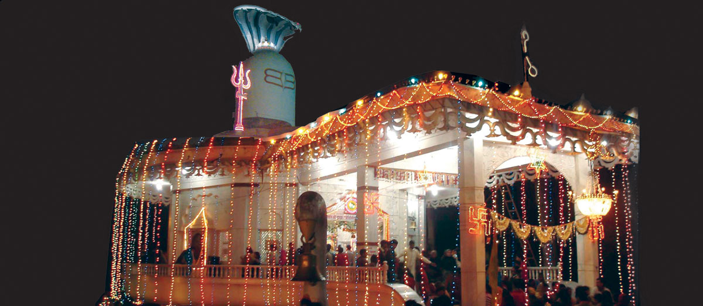

श्री द्वादश ज्योतिर्लिगेश्वर महादेव मंदिर

भगवान द्वादश ज्योतिर्लिगेश्वर महादेव जी के मंदिर कि आकृति एक शिवलिंग के आकार की है जो करीब ५० फीट ऊँचा है जिसका व्यास ३० फीट है । इस पर करीब २०० फीट लम्बा नाग लिपटा हुआ है । जिसका फन करीब २२ फीट है । इस मंदिर के बाहर एवं अन्दर श्वेत मकराना संगमरमर लगा हुआ है
अन्दर के संगमरमर में प्राकृतिक रूप से शिव लिंग , मृगछाला एवं हाथ जोड़ने कि आकृति बनी हुई है । इस मंदिर में व िराजमान शिवलिंग देश के कुछ गिने चुने शिवलिंगों में से एक है जिसमे बारह ज्योतिर्लिगों का समावेश है । इस शिवलिंग में प्राकृतिक रूप से ॐ कि आकृति बनी हुई है इनकी पूजा , अर्चना एवं अभिषेक से बारह ज्योतिर्लिगों की पूजा का फल प्राप्त होता है । इस मंदिर में बारह विशेषताएं है जो दर्शनीय है ।
िराजमान शिवलिंग देश के कुछ गिने चुने शिवलिंगों में से एक है जिसमे बारह ज्योतिर्लिगों का समावेश है । इस शिवलिंग में प्राकृतिक रूप से ॐ कि आकृति बनी हुई है इनकी पूजा , अर्चना एवं अभिषेक से बारह ज्योतिर्लिगों की पूजा का फल प्राप्त होता है । इस मंदिर में बारह विशेषताएं है जो दर्शनीय है ।